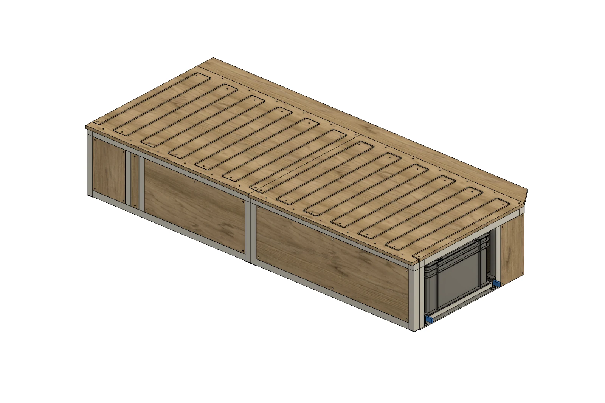
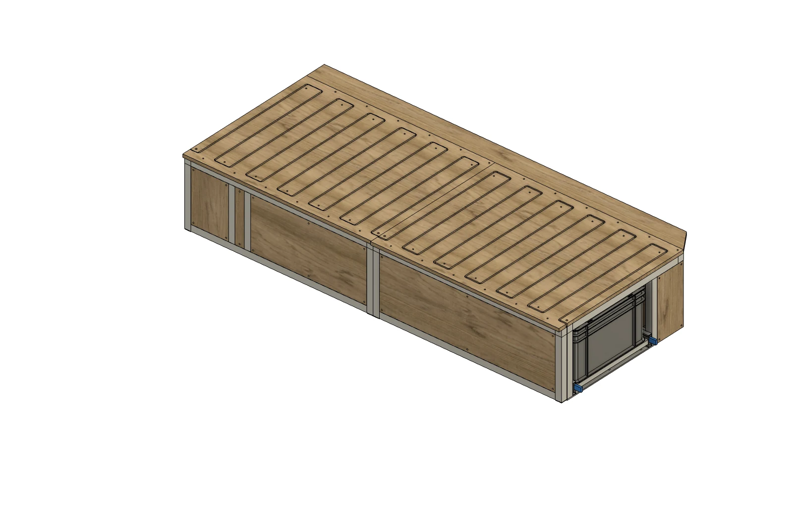
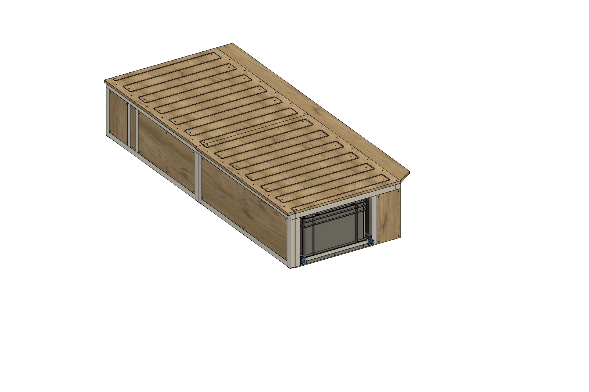
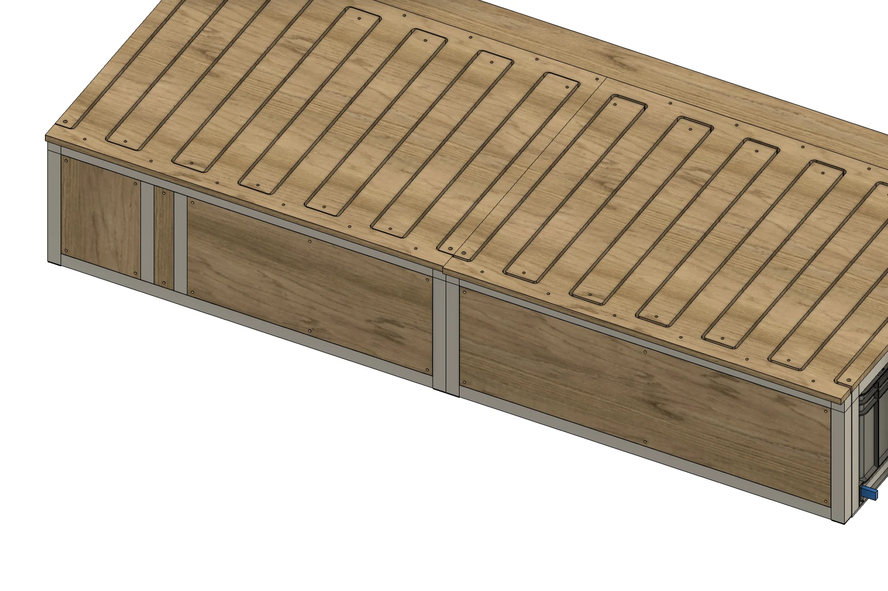
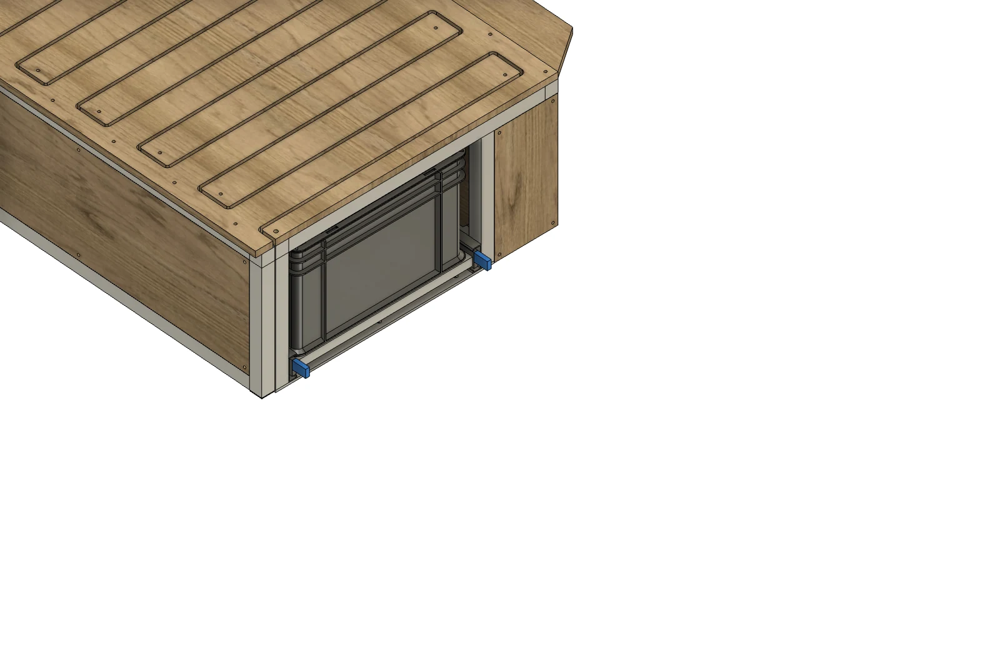

モジュール一覧 / スライドアウトベッドMODULE 09 / 11
Slide-out bed
ALUMINUMスライドアウトベッド
前後に分けて広げる。後ろから引き出す。
前後2分割のベッドを、それぞれ独立してスライドアウト。前側だけでも、後側だけでも、両方でも広げられます。後部には、引き出し式のユーロコンテナ収納を備えています。
Slide-out bed

バーチ合板01
片側ずつ広げる前側・後側の2つのスライドが独立
02
両方でベッドに2つを引き出して、ベッド面を展開
03
後ろから取り出す3個のユーロコンテナを載せたスライド収納
TWO INDEPENDENT SECTIONS
使いたい側だけ、広げられる。
ベッドは前後に2分割。前側だけでも、後側だけでも引き出せます。写真のコンテナ収納がある端が後側です。

COMPACT / FULL BED
収めると細く、広げるとベッドに。
普段は2つを収め、必要なときに両方をスライドアウト。同じ角度から、ベッド面の広がりを比べられます。


REAR SLIDE / EUROCONTAINERS
ベッドの下から、後ろへ。
ユーロコンテナを載せたトレーを後方へ引き出し、収納した荷物にアクセス。ベッドのスライドを閉じたまま使えます。


FRAME & STORAGE
動くところを、もっと近くで。
天板のかみ合わせとアルミフレーム、3個のコンテナが並ぶ後部収納。それぞれの構成を近くから紹介します。


DETAILS
モジュールの内容
- 合板の仕上げ
- ヘキサ合板（ブラック）／バーチ合板
- 天板・奥の細長い板
- ヘキサ仕様・バーチ仕様とも木目
- 合板の小口
- どちらの仕様も木の色・木目
- フレーム
- アルミフレーム・30mm角
- ベッドの構成
- 前後2分割・各部が独立してスライド
- 長さ
- 1,800mm（900mm＋900mm）
- 天板
- 厚さ15mm・かみ合わせ式スライド
- ベッドの展開
- 前側のみ／後側のみ／両方
- 収納
- ユーロコンテナ3個・後方スライドトレー
- 掲載状態
- モジュール単体・マットレスなし